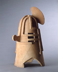
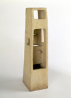
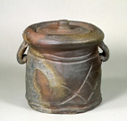
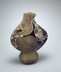
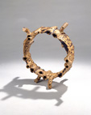

War

Lonely Tower

Freshwater Jar
When Louise Allison Cort conceived of the exhibition Isamu Noguchi and Modern Japanese Ceramics (now through 30 May 2004 at the Japanese American National Museum in Los Angeles, see link below), one of her objectives was to shed new light on the old controversy of art versus craft. In their introduction to the catalog, Cort and her co-curator, Bert Winther-Tamaki, write, "Our goal is to illuminate the overlooked zone of interaction between conceptions of art and craft by focusing on the works of ceramic artists who believed themselves centrally engaged with modernism, surrealism, and other issues of concern to an international art world." (Noguchi, Catalog to exhibit, p. x)
The selection of Noguchi and his works in the ceramic medium opens up this subject as no other possibly can. There is a personal narrative in Noguchi's works that Winther-Tamaki explores in his catalog essay A Close Embrace of the Earth. It is, however, the inclusion of the works of other Japanese "togeika", from the tradition based works of Kitaoji Rosanjin , Kaneshige Toyo and Arakawa Toyozo to the modernist sculptural works of the members of the Sodeisha group, that provides the contrasts and convergences that make this a successful exhibit.
The discussion of art and craft is still going on both in the United States and in Japan. In commenting on the 2004 survey voting on the Top 20 Living Japanese Ceramists (http://www.e-yakimono.net/html/honoho-rankings.html), Aoyama Wahei still finds that "critics see pottery as a means to an end, rather than being the end itself. It is almost as if they are actively pursuing the elevation of pottery to a higher art form- something akin to paintings, installation art, and sculptural art..."
Critic Arthur C. Danto writes "The distinction (between high art and craft) remains in effect today, leaving behind the uncomfortable idea that works of art can have no function, which is a desperate way of keeping borders closed." Danto's primary concern is to differentiate between similar objects, one art, one not-art. He defines a work of art as a carrier of meaning that is embodied in the work. In the end, Danto relies on knowing the intent of the creator to define an object as art; thus Danto forever precludes functional objects as art. By placing Noguchi's major ceramic pieces side-by-side with Rosanjin's Shigaraki Large Jar, made of similar clay and embodying similar strength, Cort and Winther-Tamaki seemingly reject such distinctions.
It is clear from viewing this exhibit that works in clay were an important part of Noguchi's personal narrative. Most of them were created in three distinct periods during trips to Japan. Noguchi felt a connection between the clay and the Japanese side of his being. This is clear from his motifs, drawn at times from the images of ancient Japan, reworked in with a sense of modernity.
The curators have arranged the exhibit to focus on the issues of art vs craft in in Noguchi's work. They range from the purely sculptural, Japanese Haniwa influenced forms such as War to square plates made in a style obviously derived from his association with Rosanjin.
The art versus craft difference is highlighted by two similar works, Lonely Tower and Large Square Vase (viewable from the Noguchi Garden Museum site). Both are slab formed, square vertical pieces with portions of the sides removed. If the title were the only reference, we might consider one to be art and the other functional craft. When the founder of the Sogetsu School of Ikebana, Teshigahara Sofu, selected a container for his use, it was the sculptural Lonely Tower.
Along side the ceramic works by Noguchi, the exhibit has an almost equal number by other Japanese artists. Kitaoji Rosanjin and Kaneshige Toyo were very well known for their work within historic ceramic traditions. Kaneshige was responsible for breathing life back into the ancient practices of the potters of Bizen. His work is unmistakably unique and cannot easily be confused with that of other Bizen masters who followed. In particular, Freshwater Jar shown in this exhibit demonstrates a complete mastery of the unique firing practices necessitated by Bizen clay bodies and the freedom of the incised decoration that he introduced into Bizen practices not found elsewhere.
Rosanjin was able to learn how to create works in many different traditional styles. A man of many occupations, first a calligrapher, then a restaurateur and finally turning to potter to make the dishes for his own restaurant, Rosanjin was more interested in understanding the spirit of a work than the continuance of a specific tradition. The Shigaraki Large Jar on display makes use of the unique, feldspar laden properties of the Shigaraki clay bodies, but extends the works with more decorative inscribing than would have been considered normal. A work of such strength and originality could only be made by one who had absorbed the content of a tradition and whose expressive needs demanded more.
Kawai Kanjiro was another artist who was dealing with questions of modernity. Kawai is more known in the west through his association with Hamada and Bernard Leach. However, after WW II, he turned away from the Mingei movement and worked completely on his own, participating in no more group shows. Always the more complete artist of the Mingei potters, shocked by the changes in post war Japan, Kawai brought a new modern sensibility to his works, abandoning the symmetry of wheel thrown works and developing a vocabulary of mold formed asymmetrical objects such as the Jar with Bird and Flower Design.
The works exhibited from the members of the Sodeisha group of potters, Yagi Kazuo, Suzuki Osamu and Yamada Hiraku represent almost a complete rejection of the craft traditions under which they had developed. The disappointment that some in Post WW II Japan felt in traditional ways and the flood of new international modes of expression obviously affected their works. Yagi's Mr. Samsa's Walk is purely sculptural. Inspired by Kafka's Metamorphosis. It's tubular appendages give the rigid structure a feeling of organic movement suitable as a metaphor, not only for the Kafka allusion but for the transformations in Japan at the time.
Yagi, the most influential Sodeisha artist, felt it was necessary to acknowledge the line between art and craft and declare which side of that line he was on. When the inclusion of one of his works in the sculpture section of a prestigious show rather than the "craft" section was questioned, Yagi was forced to declare himself. "Sculpture is essentially expression and is unconditional, whereas for craft there has to be an owner to use the piece or to look at it. I doubt whether the work I would like to submit would be recognized as craft, and I myself don't think of it as craft." (Quoted in Ms. Cort's Alfred University Lecture. See link below.)
Noguchi's simple Double Lobed Vase is probably the least satisfying of his works on display. We know from photographic record that this was a collaborative work, the two lobes being thrown by another and then attached and given their final shape by Noguchi. Though unadorned, produced with Bizen clay at Kaneshige's studio in Imbe, the two lobes attract too much attention to themselves to function well for flower arrangement. On its own the piece is not strong enough to hold one's attention. The lack is solely a matter of form, an aesthetic value that has little to do with any meaning that such a vase might carry.
There is similar aesthetic lack in Yagi's Small Vase with Two Mouths. Clearly influenced by elements of decorative style adapted from Western modernist artists, these elements are not as wellintegrated into the whole as with other Sodeisha works in the exhibit.
This still leaves the problem of how to characterize the less satisfactory works of Noguchi. It is too easy to say that they are craft while other objects are elevated as art. After all, Noguchi was an artist of great talent and a command of many materials. To do so would relegate to the world of craft many other outstanding works from Rosanjin's Shigaraki Large Jar to Benvenutto Cellini's fabled Salt Cellar. Placing these works together in a single exhibit forces one to use qualitative judgments to differentiate one's experience of them and confirms Kevin Hluch's assertion that "the premise for denying utilitarian interests in art is counterfeit" (http://www.criticalceramics.org/articles/decon.shtml).
Links
Japanese American National Museum
369 East First Street
Los Angeles California 90012
Telephone: 213-625-0414
http://www.janm.org/main.html
"Isamu Noguchi and Modern Japanese Ceramics", Sackler-Freer Galleries Online Exhibit, http://www.asia.si.edu/exhibitions/online.htm.
Isamu Noguchi Garden Museum, http://www.noguchi.org/.
Crawling Through Mud: Avant-Garde Ceramics in Postwar Japan, Sixth Annual Dorothy Wilson Perkins Ceramic History Lecture, Alfred University, Lousie Allison Cort, http://ceramicsmuseum.alfred.edu/perkins_lect_series/cort/corttalk.html
Rankings 2001: Most Important and Most Popular Japanese Ceramists in Last 100 Years, Honoho Geijutsu, http://www.e-yakimono.net/html/honoho-rankings.html.
Wesley C. Rolley
17211 Quail Court
Morgan Hill California 95037
408-778-3024
http://www.refpub.com/

Jar with Bird and Flower Design

Mr. Samsa's Walk